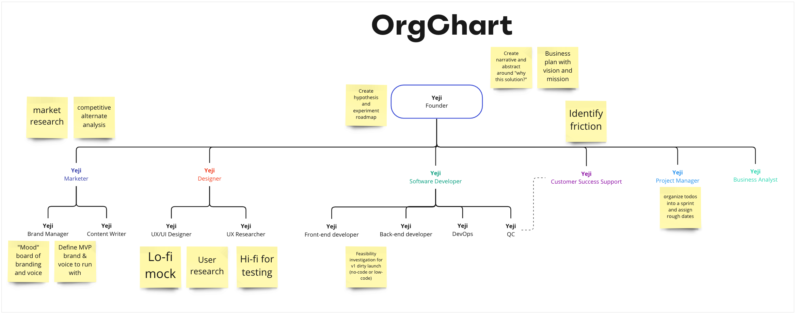

Starting a new venture requires getting a lot of things done. This means spinning several plates on any given day. You may have to sketch your ideas on paper one minute and talk to friends and family for angel investments the next. Spinning plates is impressive but exhausting. Creating an organizational chart helps to bring order to the plate spinning.
In the early stage, you can see what you’re getting into
One of the best ways to size up a task at hand is to think backwards. Visualize what the end state will be and consider what is necessary to get to it. Rinse and repeat the process until you get to a smaller, bite-sized task.
For example, if you’re going to host Friendsgiving, visualize what the event looks like. Eight friends gathered together, sharing a meal and playing games. For the meal, how much food is necessary? Once you have that figured out, how long will it take to prepare? If it’s too much on your own, then you can think of different solutions. Find a place that sells pre-made meal kits. Make it a potluck. Ask people to come earlier and help.
Thinking backwards show up in multiple places. When I practice where to put flourishes in my handwriting, I first write out the words and visualize where I will flourish first before jumping straight in.

Solutions and ideas open up once you know what you’re getting yourself into.
Drawing up the orgchart is an exercise that assists you in thinking backwards. By drawing boxes and lines, you are able to visualize the different plates that exist. Before you jump into the deep end, orgcharts allow you to size up your venture and ask “am I ready to take this on?”
In the growth stage, you can scale without hiring mind readers
Let’s say diligence and luck pays off, and you’re in the growth stage. You can’t handle all the plates at this point. So which plate do you hand off? And how?
The need to be in control is no joke. I’ve had colleagues who refer to their products as their “baby.” Even as they move up the ladder, I’ve seen egos bruised as their baby grows without them. I imagine this is worse when it’s your own pet project.
With an organizational chart, you can remove yourself from the equation. First, you can look at the chart to identify areas bottlenecking growth. Second, you can define what kind of roles exist within those areas so you know who to hire. Third, you can define expectations for the roles so the new hires know what they’re expected to do.
My orgchart
One of my former bosses said to me, “Orgcharts don’t matter. It’s just boxes and lines. People matter.” I disagree. People matter, so boxes and lines matter. Orgcharts shed light on how we fit together. Without them, accountability erodes.
So, even before I began to think about my product, I came up with an orgchart. For now, I hold as many titles as Tom Brady, Lebron James, and Stephen Curry combined.
Next, I noted responsibilities that exist within the departments. Finally, I highlighted key responsibilities that are imperative to do now. This exercise was to ensure that I can zero in on the most important work to get started.

I know this chart isn’t perfect or complete. That’s not the point. What I was able to visualize are the different crafts that must come together for me to dare, hope, and dream. And if I get lucky, maybe I’ll get to remove my name off the boxes on the chart.